Procession Engine
Everything here may be used freely in coverage of the game. For keys, interviews or anything else, just ask.
Logo and key art
Select a preview to view it larger, or download the original file.
Logo

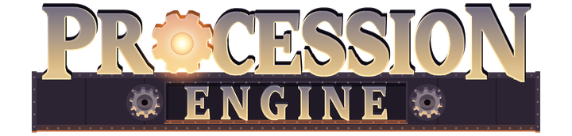


Key art

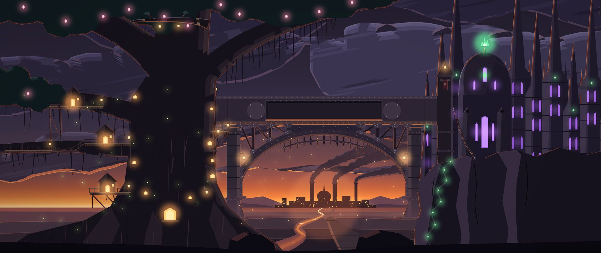

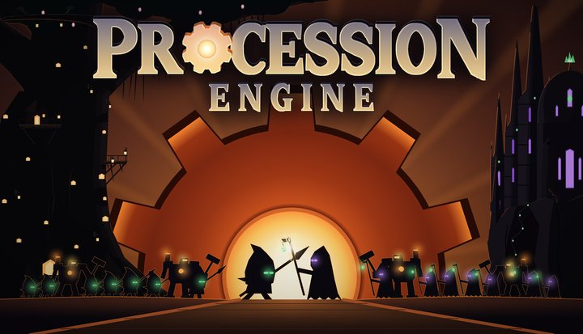

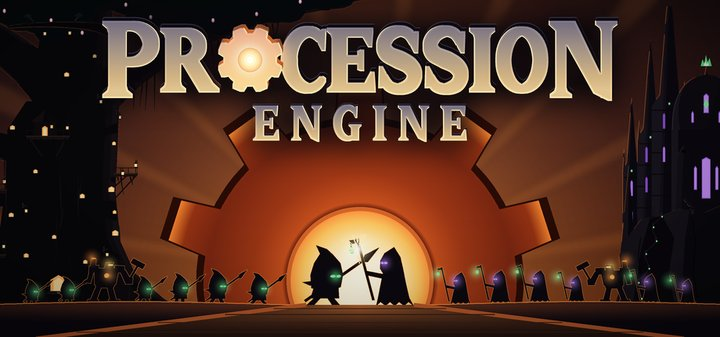

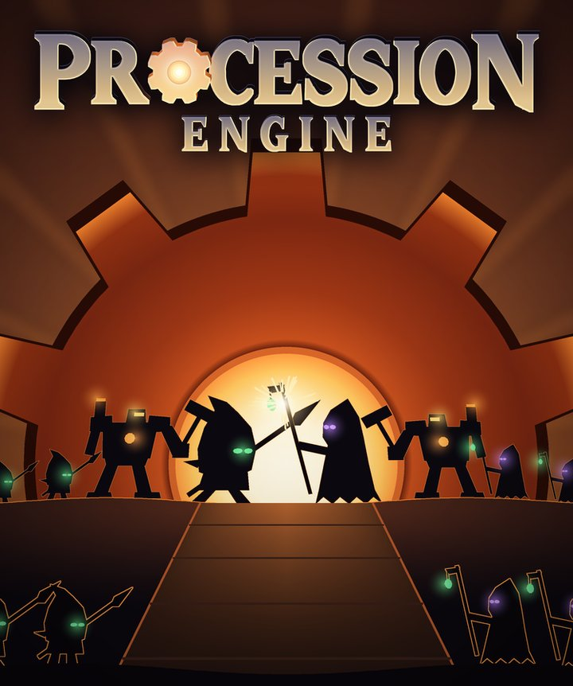

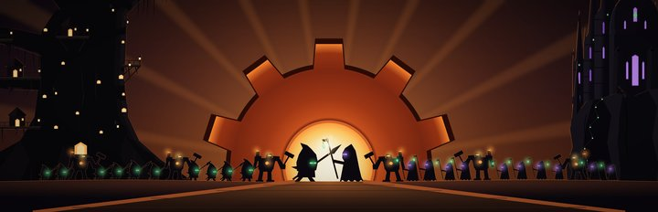
Icon

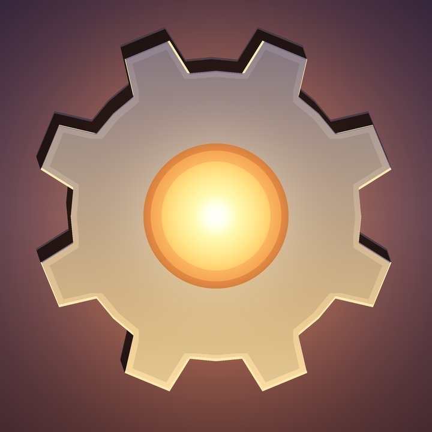
About the game
ShortNot another turn-based deckbuilder. A real-time tug of war where you command a whole army: your buildings spawn it, your cards shape it, and two lanes decide whose stronghold falls first.
LongNot another turn-based deckbuilder. Procession Engine is a real-time tug of war where your cards shape a whole army, not one hero.
Your stronghold on one side, theirs on the other, two lanes between. Armies march both ways, meet in the middle, and try to push through to the opposing stronghold. There are no turns. The enemy keeps building while you do, and the fight ends when a stronghold falls.
You don't play one hero. Your buildings spawn your army and your cards decide what it becomes: raise a new spawner mid-fight, arm a whole lane, or break a line with a spell. Cards ride a moving belt toward the edge, so play them or lose them.
54 buildings, from spawners and artillery to soul engines, each with three blueprint variants to find and upgrade. Socket elemental imbues onto them. Etch your best at the Workshop and they are already standing when the next fight begins.
Every building has four unique partners. Stand one flush against the right face of its partner and the pair forms an Accord, an extra bonus neither has alone. The yard lights the spots where an Accord would form, so where you build matters as much as which building you choose.
Bloomwardens: a living forest. Paint the battlefield in Bloom, grow your titans, create waves of sprouts to push the lane or bleed whatever comes at you.
Iron Concord: war industry. Forge mechanical frames, dock modules onto them, fight through with drone swarms, or level the lane with artillery.
Hollow Choir: a death cult. Use the souls of your own army, spread plague, raise what dies, or grow in power with sacrifices.
Play a run with up to two friends. Co-op is balanced for its own board: two players hold three lanes and three players hold five, so every fight plays differently. Unlock cross-race partner Accords and find new combinations to win.
Carve a path through three acts of skirmishes, elites, bazaars, strange events, relic shrines and workshops. Each act belongs to a different enemy faction and ends at one of its two bosses. Over 250 cards and over 250 relics, blueprints, tempering and the Lattice's run-long investments mean no two processions march alike.
Win, and the rules turn against you. Ten stacking Trials, each twisting the war further, until winning at all is the achievement.
Key features
- A deck on a conveyor belt. Cards ride a moving belt toward the edge, so play them or lose them. There are no turns.
- Real-time tug of war. Your stronghold on one side, theirs on the other, two lanes between.
- A yard of buildings. 54 buildings, from spawners and artillery to soul engines, each with three blueprint variants to find and upgrade. Socket elemental imbues onto them. Etch your best at the Workshop and they are already standing when the next fight begins.
- Accords. Every building has four unique partners. Stand one flush against the right face of its partner and the pair forms an Accord, an extra bonus neither has alone.
- Co-op. Play a run with up to two friends. Two players hold three lanes and three players hold five.
- Three playable races and hundreds of cards and relics.
- The Lattice. Over 250 cards and over 250 relics, blueprints, tempering and the Lattice's run-long investments mean no two processions march alike.
- Three acts, each belonging to a different enemy faction and ending at one of its two bosses, then ten Trial difficulties.
- Balance shaped with players. Balance patches driven by community feedback and gameplay statistics.
Trailer
Gameplay trailer, 1 min 23 s. Free to use in coverage.
Screenshots
Captured from the current build. Select a preview to view it larger, or download the full-resolution PNG.

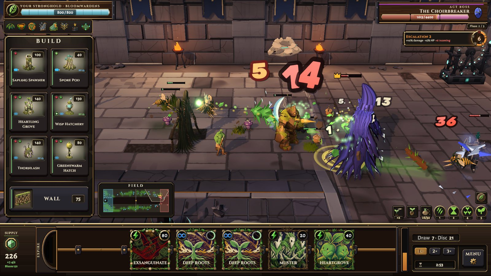

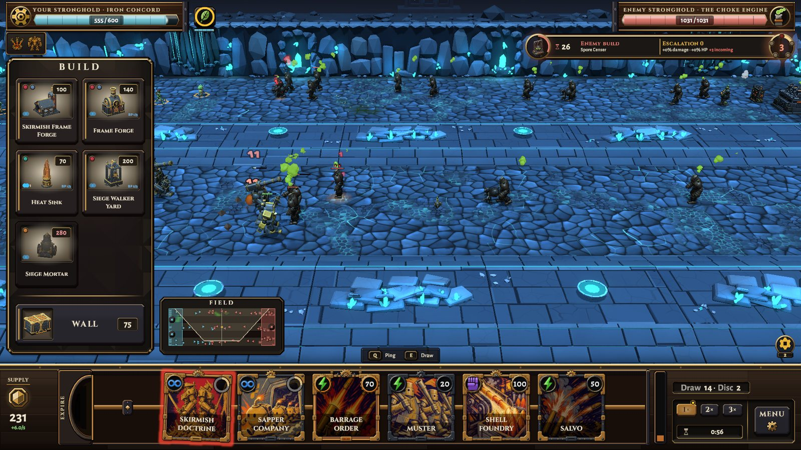

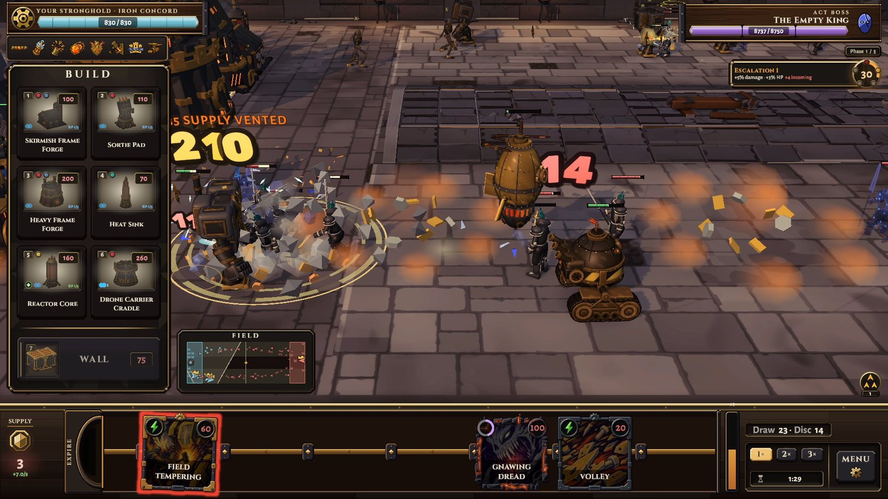

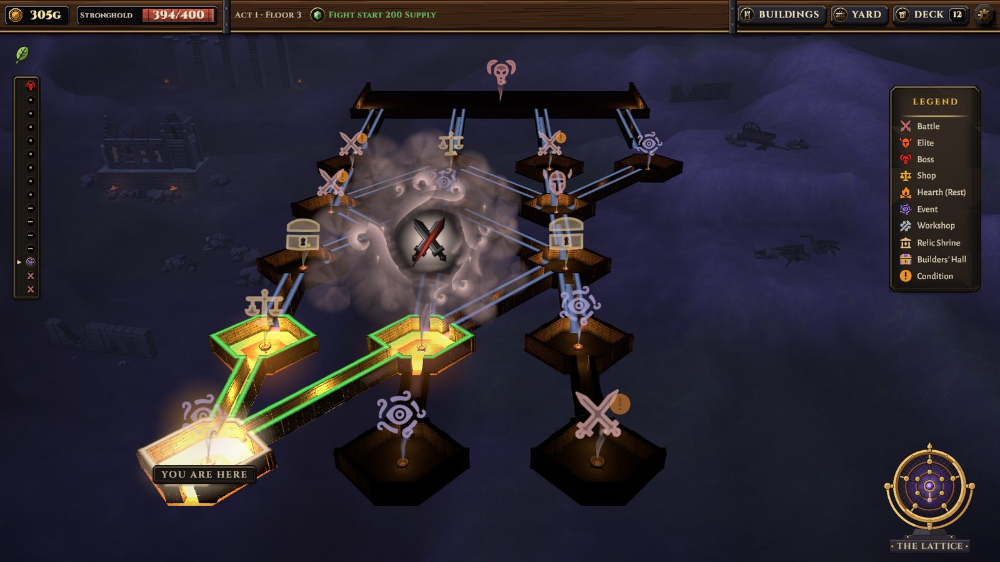

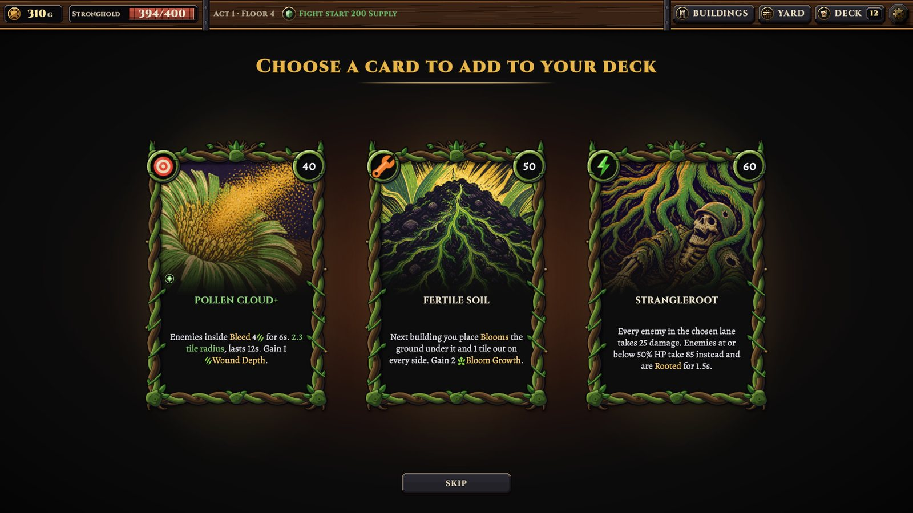

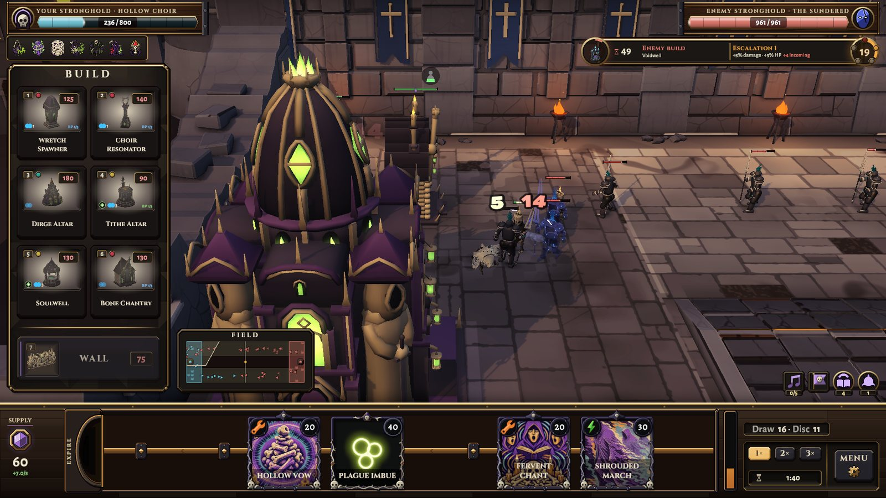

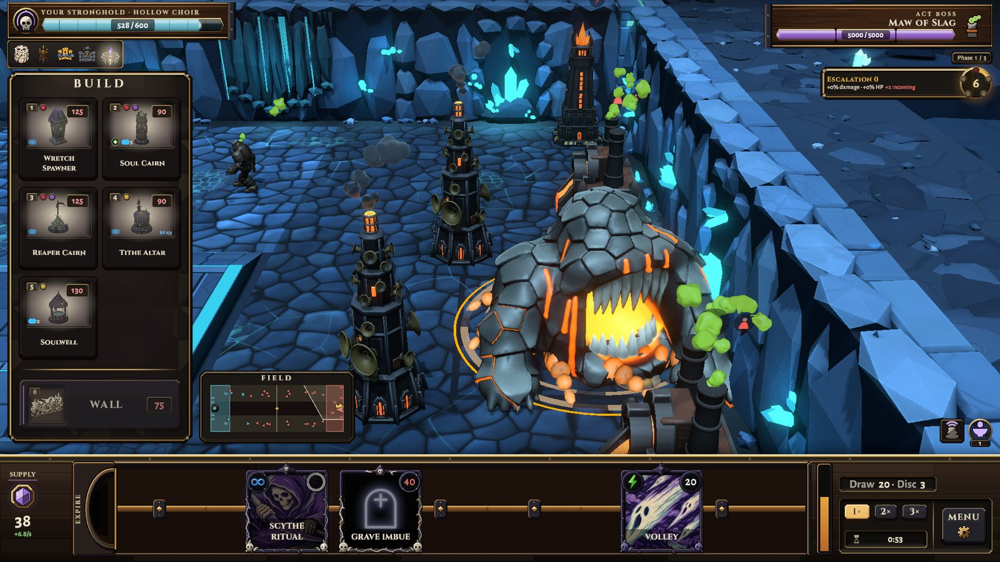

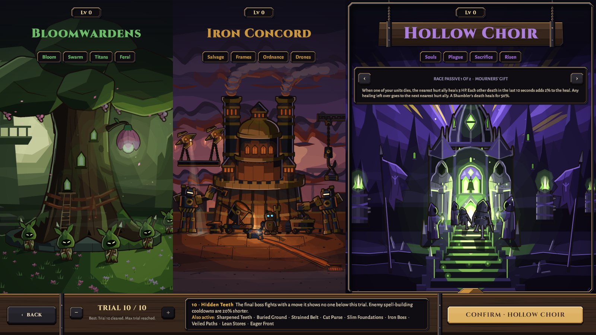

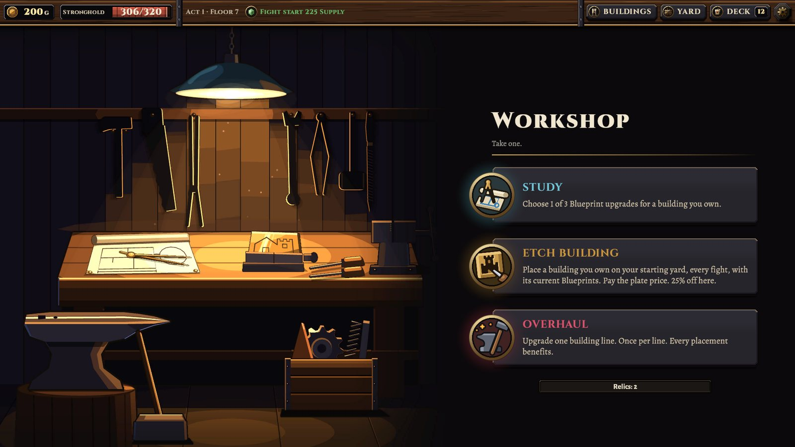

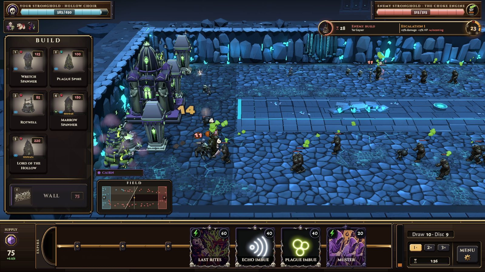

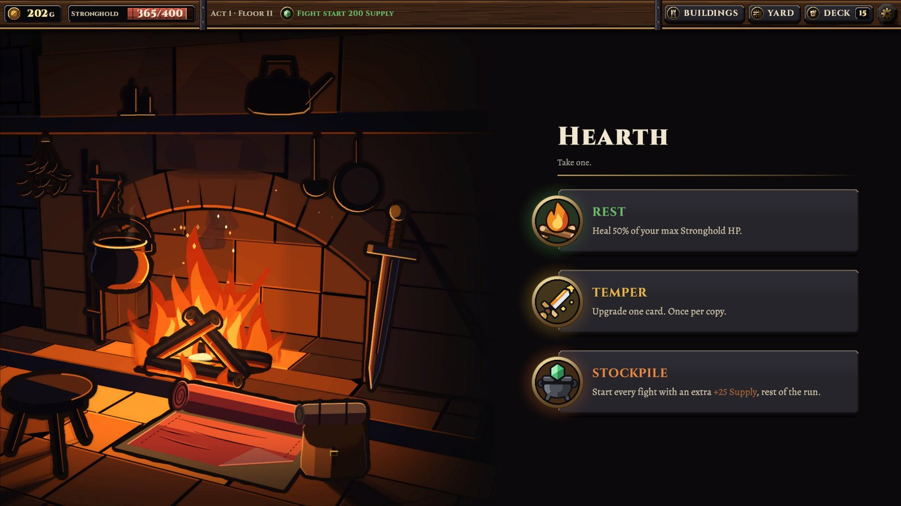

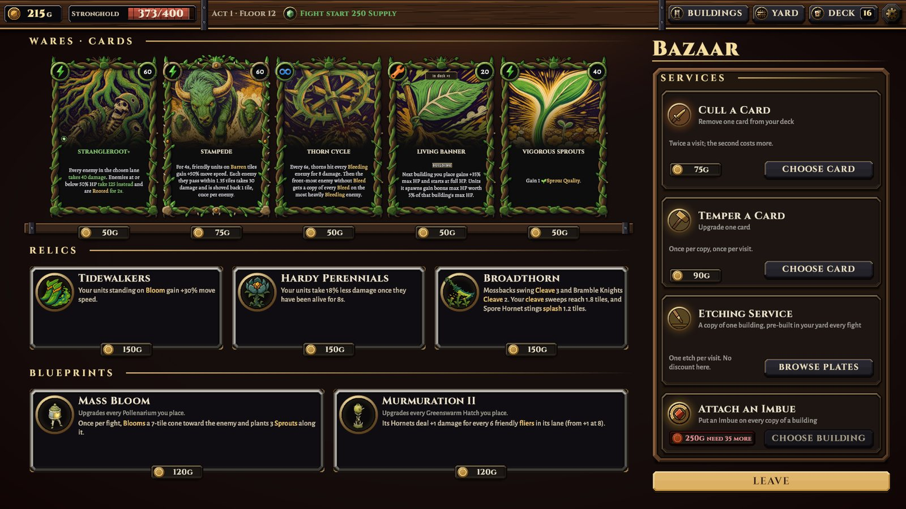

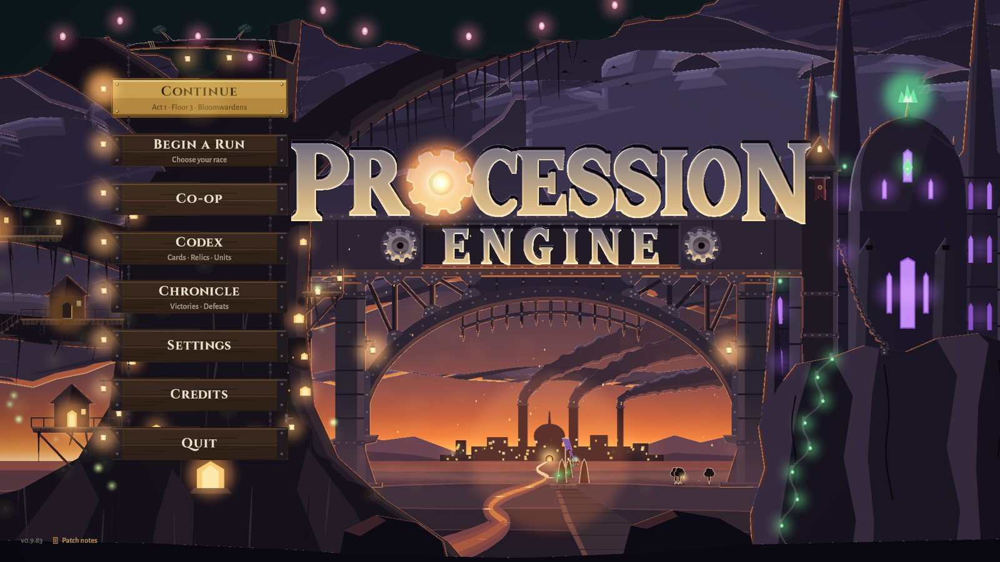

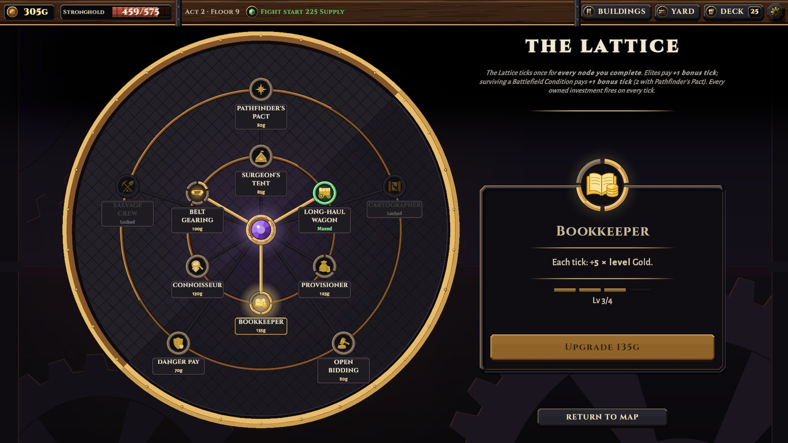
About Not Applicable Games
Not Applicable Games is an independent studio. Procession Engine is its first title, built in Unity and shaped over a long series of playtest-and-rework passes, with the care going into how every fight plays and how every card reads, until the game is genuinely fun.
Get in touch
Email contact@notapplicablegames.com for keys, interviews or anything else. The best place to follow development is the Discord.